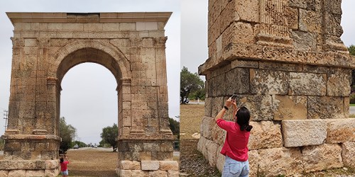
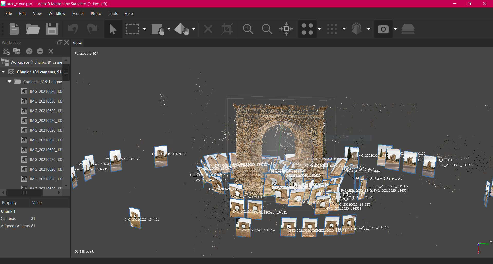
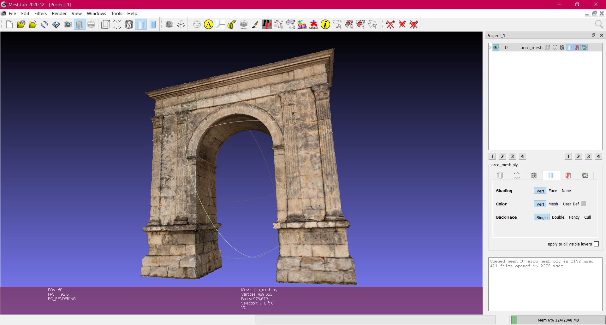
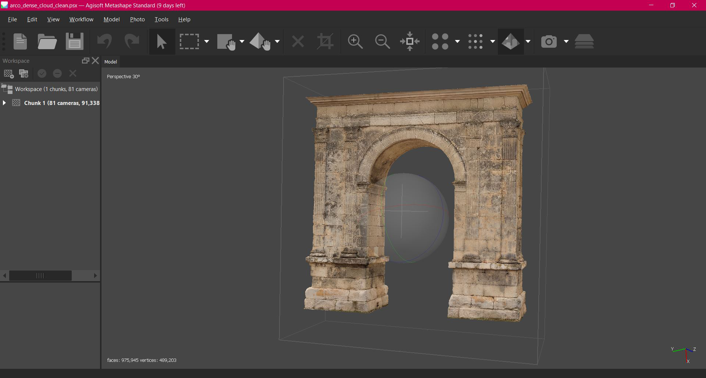
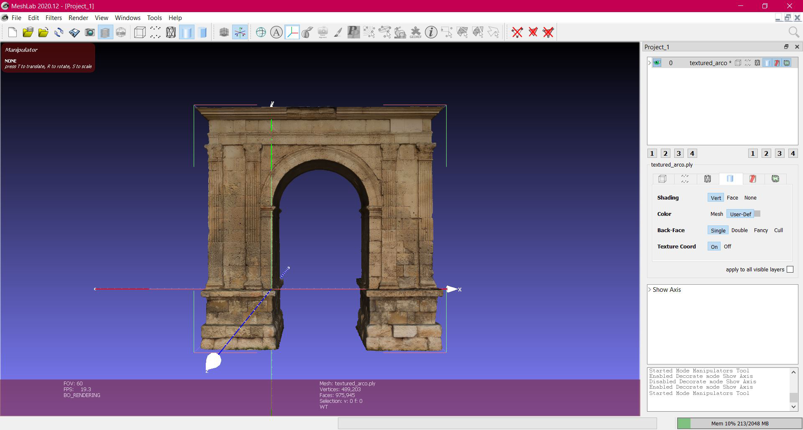
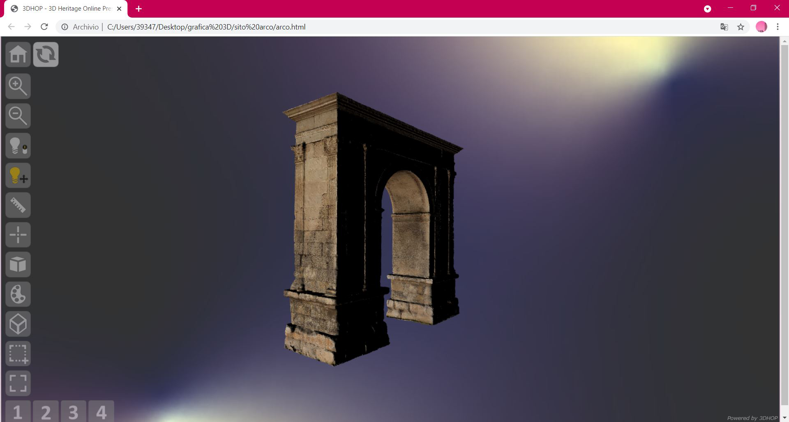

Fotografare. Primo step.
Dopo un sopralluogo per valutare lo stato del soggetto e il contesto in cui si trova, un insieme di fotografie scattate a diverse altezze e direzioni e in buone condizioni di visibilità costituisce la base di partenza per una buona elaborazione del modello. In questo caso sono state allineate 128 fotografie scattate con tempo nuvoloso per evitare ombre.

Ricostruire 1. Allineamento delle immagini.
Un software come Metashape è indispensabile per la creazione del modello. La prima cosa da fare è importare il set di immagini e procedere con l'allineamento delle camere, ponendo attenzione alla loro posizione e osservando i punti su cui è stato fatto l'allineamento, e se questi coprono le superfici interessate. A questo punto si ottiene una nuvola sparsa.

Ricostruire 2. Creare la nuvola densa.
Dopo aver ristretto la zona di interesse ed eliminato i punti più esterni, si passa all'elaborazione di una nuvola di punti densa. È consigliabile procedere gradualmente nel livello di elaborazione e valutare man mano il risultato, partendo da un livello medium e, in caso, passare successivamente a high.

Ricostruire 3. Pulire il modello e creare la superficie.
Il passo successivo consiste nella pulizia del modello. Con un software come MeshLab si selezionano ed eliminano i punti isolati intorno al modello. Si passa poi all'applicazione del filtro di Poisson per creare la superficie. Si procede all'ispezione del modello con la mesh, per valutare il risultato. Probabilmente saranno necessari diversi giri di pulizia prima di ottenere un modello privo di punti sparsi. Nel nostro caso, particolarmente problematica è stata la pulizia della parte superiore dell'arco.

Ricostruire 4. Aggiungere la texture.
Una volta ottenuta la superficie, che ha un colore per vertice, si passa all'applicazione della texture. Si importa il modello in Metashape che elabora la texture delle immagini a una certa risoluzione - in questo caso 2048 - e la applica al modello. Nella prima elaborazione in una parte dell'arco si vedevano chiaramente le forme delle foglie d'ulivo sovrimpresse nella pietra, perché in una delle fotografie era presente un albero davanti all'arco. Occhio ai dettagli!

Ricostruire 5. Scalatura e riposizionamento.
La fotogrammetria non è in grado di elaborare le misure dell'oggetto nella realtà, perciò prima della pubblicazione è necessario scalare il modello sulle dimensioni reali, scegliendo l'unità di misura più appropriata tra metri e millimetri. Infine va settata l'origine degli assi in un punto del modello tale per cui, all'apertura del file, questo si trovi nella posizione desiderata.

Pubblicare. Ultimo step.
Per il rendering online è preferibile un modello a multirisoluzione, perciò il formato a risoluzione fissa con estensione .ply viene convertito in .nxs o nella versione compressa .nxz. Per la presentazione del modello sul web viene utilizzato qui il framework open source di 3D-HOP, che permette l'interazione con il modello. È possibile inserire hotspot: in questo caso, per esempio, sono utilizzati per evidenziare gli interventi di restauro.
